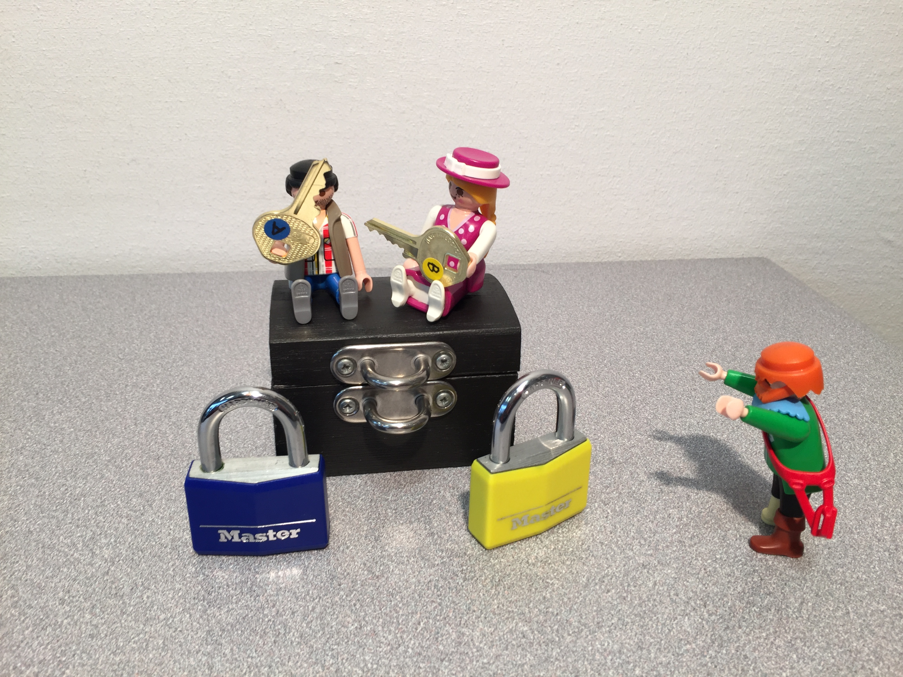
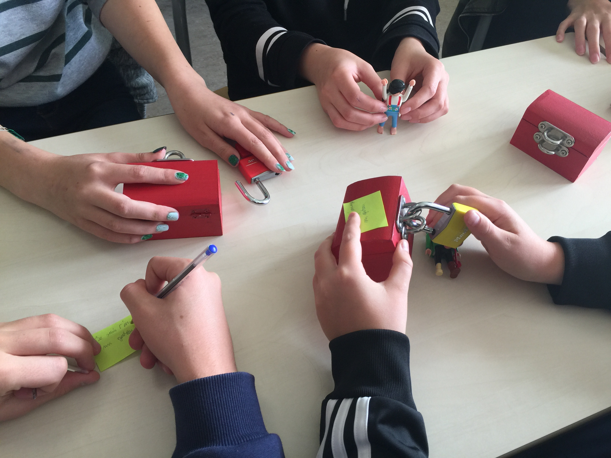

A push-button tool for analysing privacy in security protocols
DeepSec (not the smartest name due to all of the homonyms and paronyms...) is the project I have contributed the most to.
This tool was designed as a successor of APTE, analysing privacy-type properties in security protocols with better performances and scope.
I joined the crew during my thesis and helped shaping the theory behind the tool, and contributed to the design and implementation of optimisation techniques that are now integrated.
I happened to record my PhD defence, which includes a 5min demo of the tool's interface (see the extract below).
joined in 2017
The Everest Project
A fully verified https stack
This long-term project (here) carried among others by Microsoft Research and Inria, focuses at producing formally verified implementations of the https ecosystem, mostly using the F* proof assistant.
This includes protocols such as TLS but also the IETF version of the QUIC protocol;
I contributed to proofs of correctness and security of the latter (mostly of its packet encryption) in 2019.
2019
Scientific popularisation
Hey Grandpa, this time *I* will tell you a story
I have always liked to (try to) explain technical things in non-technical terms, which encouraged me to participate to various popularisation projects since the beginning of my thesis.
I participated to Ma thèse en 180 secondes (My thesis in 180 seconds), the French iteration of a popularisation
competition where PhD students present the challenges and contributions of their ongoing thesis to a broad audience in
a limited time.
You can see a live recording of my speech below (in French):
Alongside with Véronique Cortier, I also contributed to an activity for explaining the challenges and daily-life implications of security protocols.
This takes the form of an interactive riddle that targets audiences from children (we implemented it in a junior school in France) to curious adults (even researchers of other fields).


We have also written a short paper (available soon) to describe to other experts how they can deploy the activity themselves.
Hopefully, I will also be able to do so soon in schools in Germany (when my German improves and we can organise this in a corona-safe environment...).